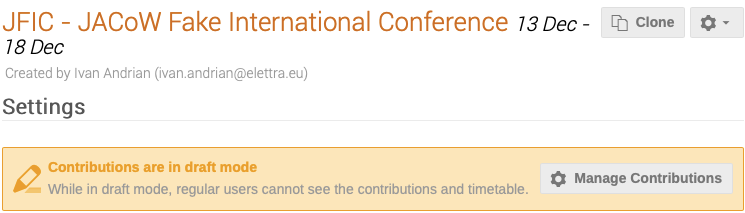
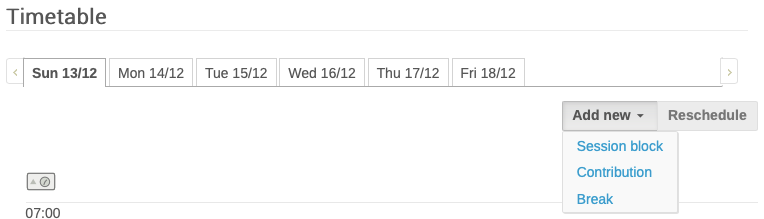
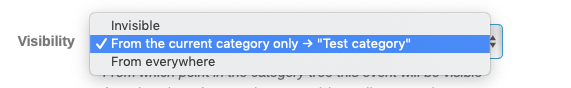
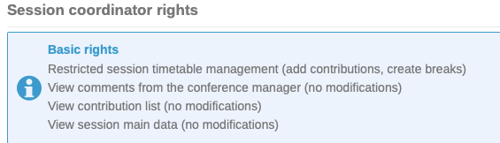
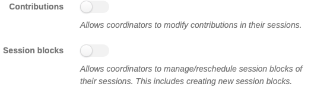

Management Area
Settings
The Management Area opens in the Settings screen where the Event Administrator can customize the general information concerning the event: the title of the event, dates, timezone, venue, Chairpersons, Event Administrator, Keywords, etc.
Initial preparations for the conference will be made in the JACoW-Indico event in Draft Mode, until it may be released for the general public via the "Manage Contributions" link shown below.

The Manage Contributions link leads to the "Contributions" screen under Organization, and explained below. This screen allows for the creation of "contributions" outside of normal abstract submission.
Note that Indico distinguishes between "abstracts", which are proposals for contributions to the conference submitted during the call for abstracts exercise(s), and "contributions" which are entries solicited by the SPC, or entered by the Administrator, that will already have been accepted for presentation by the SPC without going via a review procedure (see Glossary).
Thus, creating entries for talks, posters etc., may be carried out in two ways:
-
via the "usual" call for abstracts which will appear in the display area mentioned above when abstract submission is open, or
-
via the "Manage Contributions" link shown above when a "contribution" is created, i.e. a talk or poster already accepted for presentation, with no need to go through a selection procedure.
Timetable
The Timetable screen is used to enter the conference daily schedule:

Via the links to Add new Session block/Contribution/Break the Event Administrator will build the event schedule.
Protection
The event protection screen controls permissions/privileges to either "Manage" or "Access", parts of the event.
When creating the event the JACoW Events Manager will have assigned the Event Administrator with full Admin permissions or privileges, together with other JACoW Experts.
Event protection Permissions are set via this screen. Clicking on Add "User / Group" or "Event Role" opens new windows. Choosing between "Users" and "Groups" opens the possibility to enter:
-
Users: search for new Users, or choose from the "Suggested Users" proposed (and based on the Event Admin privileges) to enter individuals and enter Manage or Access permissions;
-
Groups: create Group names, and either search for new Users, or choose from the "Suggested Users" proposed (and based on the Event Admin permissions) to enter individuals. Groups are instance-wide (indico.jacow.org), roles are event-only "groups".
It is also possible to assign permissions to roles that will have been entered in the Roles Setup screen described below.
Manage/Access permissions are thus assigned to the different roles/users/groups.
There are three Protection modes for the event:
-
Public: Publicly accessible since it is set as "open" to the public,
-
Inheriting: accessible depending on the event category
-
Protected: Only accessible by the users specified above and the managers of parent resources.
We suggest that the event be set as Protected until the general submission for contributed presentations opens.
For this to work, be sure that all people that needs access to this event is listed in the Protection section above. It is wise to define all Roles and add Roles under Protection instead of single individuals.
The Access key should not be used for security reasons.
The No access contact may be used to enter contact information when a person without permissions is trying to access the event.
The Visibility options make the event visible or invisible in the list of events in one or more categories when browsing indico.JACoW.org.

Public registration allows users who cannot access the event to register, i.e. exposing only a registration form.
At the bottom of the screen the section "Session coordinator rights" describes basic rights:

and offers further options which may be enabled/disabled depending on scientific programme activities:
